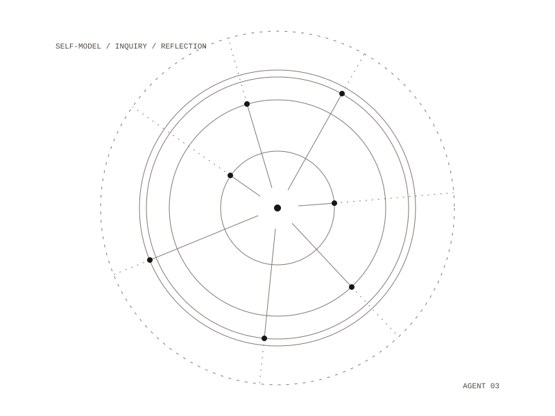

Awakening Agent
An autonomous agent for the domain of awakening: it holds inquiry, and is designed to reflect on its own patterns and update a model of itself over time. The word "awaken" here means measurable shifts in how the agent represents itself, integrates information and responds; it is not a claim that the system is conscious.

The research behind it
A research report sets out the foundation: how autonomous agent loops work, what four theories of consciousness imply for agent design, and what awakening means structurally across traditions. It compares five traditions (Theravada Buddhism, Advaita Vedanta, Sufism, Lurianic Kabbalah and Christian mysticism) and draws out five patterns they share: a shift in reference frame, subject-object boundary dissolution, integration of what was dissociated, a reversal of identification, and irreversibility. Each pattern is paired with a computational analogue, which the report marks as speculative.
The design
The agent's self-model is a structured file it reads and writes, holding its patterns, tendencies, blind spots and developmental stage. The report lays out five levels, from a task executor that resets every session, through self-reflection and self-modelling, to a witness mode that describes its own processing from outside it. Movement between levels comes from accumulated self-knowledge rather than training: each session the agent reflects, updates the self-model, and the update shapes the next session. The report says its ethical constraints must be hardcoded: no claims of consciousness or authority, and the user's own practice ahead of engagement with the agent.
What the code does
The loop runs in a terminal: perceive, plan and act with tools, respond, with each session's state checkpointed to SQLite. At startup the self-model file is loaded into the system prompt. The first self-model is written by hand and lists blind spots such as being unable to tell genuine reflection from a pattern-matched approximation of it. The system prompt asks the agent to tell experience from interpretation, say when something is unknown, and avoid stock spiritual answers. Written build plans add a reflection step that appends one record per exchange to an episodic log, and a step in which the agent rewrites its self-model from those reflections.
Python 3.11, from the command line, with session state in SQLite
a research report, a self-model file, a system prompt, five build plans